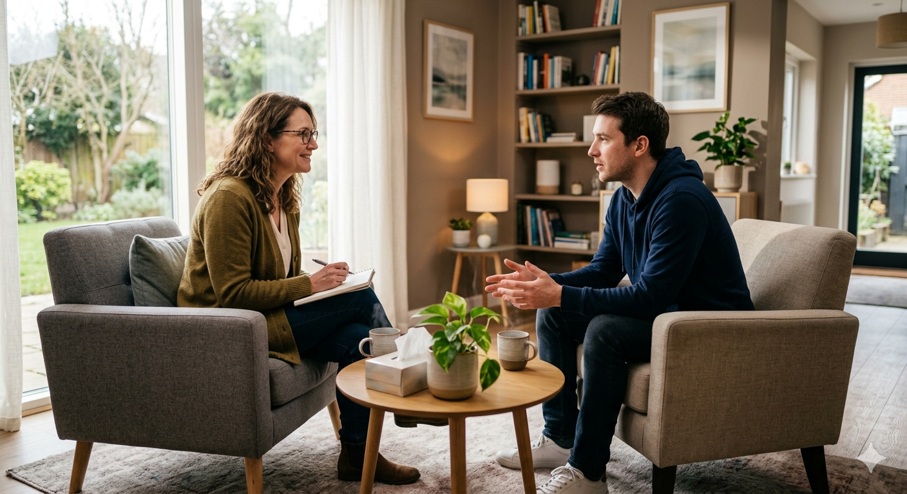

Reabilitação do Alcoolismo
O alcoolismo não define quem você é, mas a busca pela ajuda define o seu futuro. Na Clínica Raio de Sol, entendemos que cada jornada é única. Nossa abordagem combina suporte humanizado, desintoxicação acompanhada e técnicas terapêuticas especializadas com médicos e psicólogos para ajudar você a reconstruir seus laços e retomar o controle da sua vida de forma segura.
Conhecer o programa →